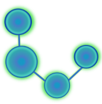
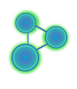

常に最適化を目指すことがモットーです。
プログラミング言語PHPを使用するシステム開発、
Webサイト制作なら
広島を拠点とする2XJack(ツーテンジャック)へ
ご相談ください。


代表挨拶
私が初めてコンピュータに触れたころ、それはまだ道具としての側面が大きいものでした。しかし現代では、単なる仕事道具として以上の大きな規模での活用がされており、私たちにとってパーソナルコンピュータやスマートフォン・タブレットは論じるまでもなく欠かせないものです。そんな時代の中で、私にできることは限られているかもしれませんが、ITの力の活用によって社会により良い影響を与えて行き、いつかは「誰も夢を諦めなくて良い社会を作る」ことが私の夢です。
企業理念
- 利益追求
- 利益の追求はあまねくすべての企業にとっての最優先事項です。利益を出すことができてこそ、企業は社会の中で意義を持ちます。 - 時間管理
- 時間は誰にとっても1日に24時間しかない、唯一平等な資源です。その平等かつ有限である時間を無駄にしない姿勢こそが、最適化を実現します。 - 社会貢献
- 利益を追求し時間を管理し、生み出した価値を社会に還元せずただ私腹を肥してばかりでは、成功とは呼べません。当所では社会全体で豊かになることを重視し、価値を社会に還元します。
事業内容
- ITソリューション
- LAMP(Linux, Apache, MySQL, PHP)環境によるWebシステム開発やソフトウェア開発等のサービスを提供いたします。詳細については、お問い合わせください。
- マルチメディア
- ビデオゲームやポピュラー音楽などを主題とした動画やブログなどのメディア媒体の制作を行い、供給しております。詳細については、お問い合わせください。
事業所概要
屋号
代表者
設立
所在地
連絡先
事業内容
ツーテンジャック

野網 優一
2019年10月7日
〒732-0828
広島県広島市南区京橋町１−７アスティ広島京橋ビルディング 1F/2F
050-3708-4910
- ITソリューション事業
- マルチメディア事業
沿革
2020年8月
2020年6月
2019年10月
広島市南区に事務所所在地を移転
マルチメディア事業の展開を開始
ITソリューションを主たる事業として創業